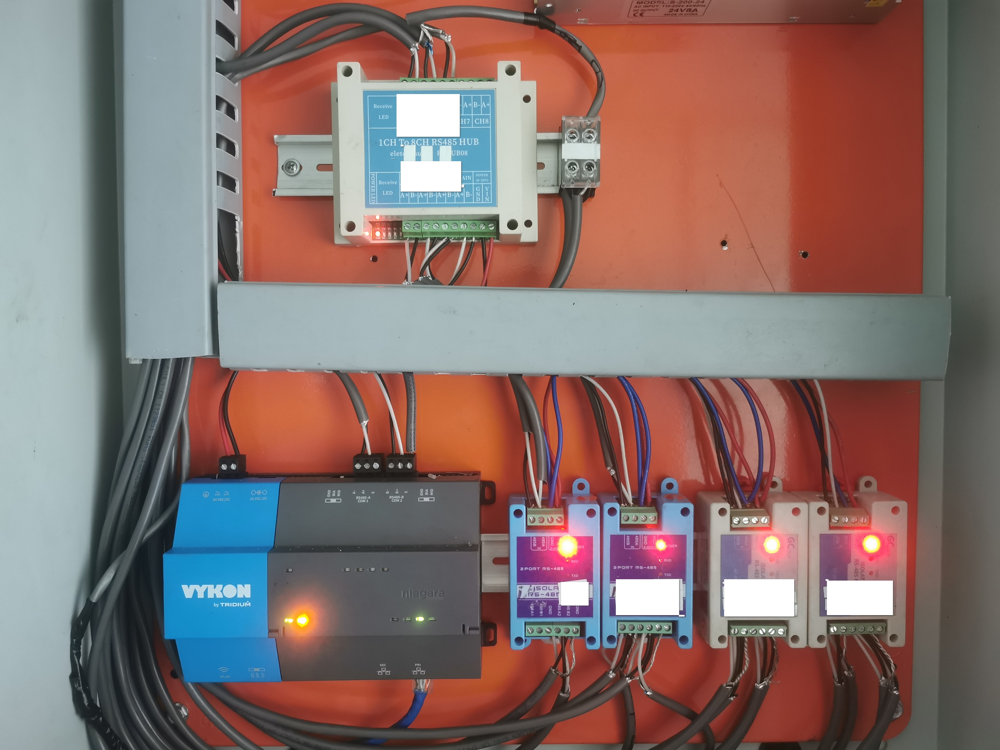
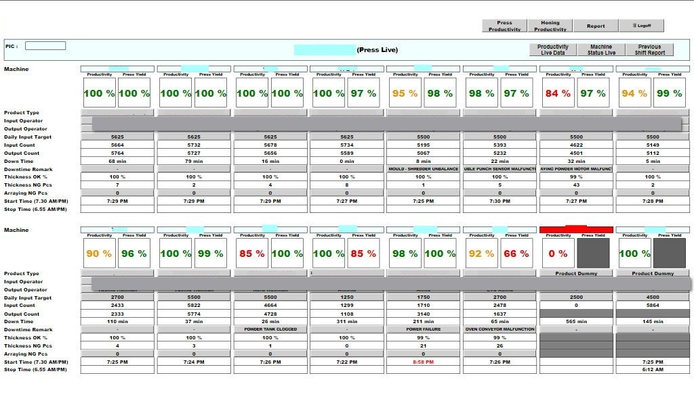
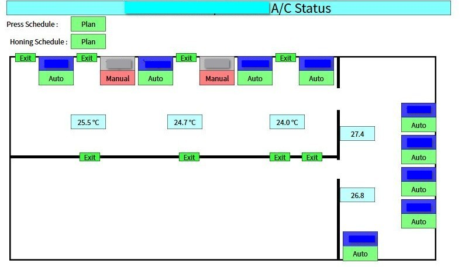

Project Summary
Architected a centralized IIoT ecosystem to digitize the entire factory. Unified 4 distinct operational silos (Quality, Maintenance, Production, Facility) into a single Niagara Supervisor platform, feeding a central SQL Database.
Industrial Panel Design & Wiring

Custom PLC Control Panel with Mitsubishi FX5U and neat wire labeling.

Tridium JACE 8000 Gateway integrating RS485 Modbus and IP networks.
Real-Time Visualization & Analytics

Automated OEE Dashboard: Real-time tracking of Availability, Performance, and Quality for 14 production lines.

Facility Digital Twin: Floor plan mapping of AC units with live status and room temperature.

High-Density Zone Monitoring: Live temperature tracking across all firing zones with deviation alarms.